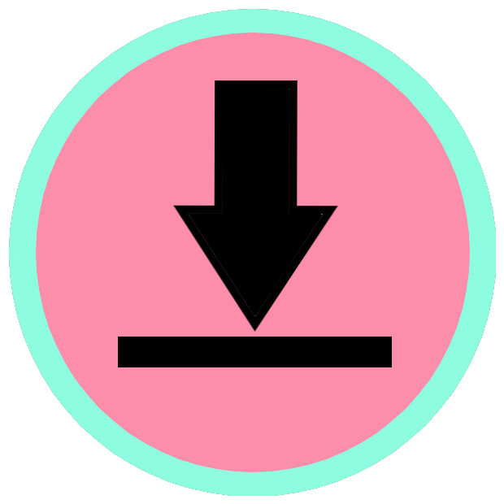

Üldine
Siit võid leida lingid eesti-inglise keelsele matemaatika sõnaraamatule kui ka "Diskreetse matemaatika" Youtube'i playlistile, kus on seletatud peaaegu kõiki teemasid, mida kursusel käsitletakse
Eesti - inglise matemaatika sõnastik
Diskreetse matemaatika youtube playlist
Esimene pool kursusest
Pole kindel mida mõni loogika sümbol tähendab?
Loogika sümbolid
Väga põhjalik lausearvutuse kalkulaator
Lausearvutuse kalkulaator
Ei saa aru kuidas arvutada erinevaid Venni diagrammi väärtusi?
Venni diagrammide kalkulaator
Tabel kõigi samaväärsustega, mida kursuse jooksul vaja võib minna
Tabeli PDF
Teine pool kursusest
Kollokviumi piletite materjale sisaldav PDF-fail
Kollokvium
Induktsiooni seletav video
Ei saa aru mida tähendab funktsioon diskreetses matemaatikas?
Funktsioonid
Soovid kontrollida kas funktsioon on injektiivne või sürjektiivne?
Injektiivsuse ja sürjektiivsuse kontroll